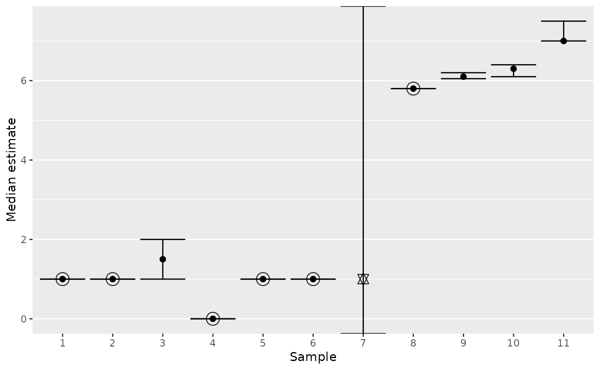
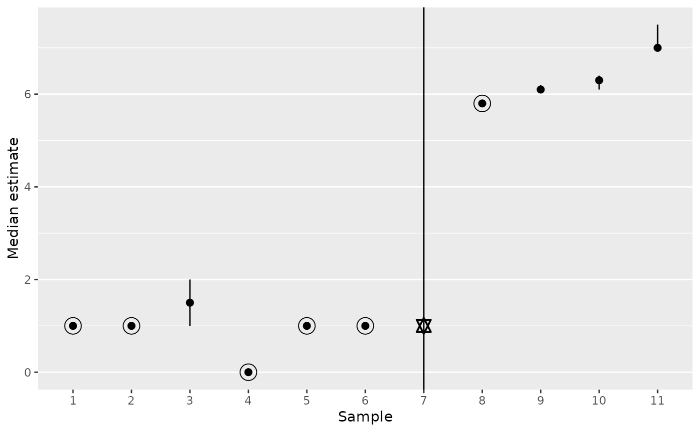

median_plot_errorbar() visualizes the results of
median_table(). It shows the lower and upper median bounds using
error bars. Median estimates are displayed as points.
median_plot_pointrange() is a variant that uses simple lines instead of
error bars.
Usage
median_plot_errorbar(
data,
point_color = line_color,
point_size = 2,
line_color = "black",
line_width = 0.5,
bar_width = 0.9
)
median_plot_pointrange(
data,
point_color = line_color,
point_size = 2,
line_color = "black",
line_width = 0.5
)Arguments
- data
Data frame returned by
median_table().- point_color
String (length 1). Color of the estimate points, including any "ring of certainty". By default, the same as
line_color.- point_size
Numeric. Size of the median estimate points. Default is
2.- line_color
String (length 1). Color of the error bars. Default is
"black".- line_width
Numeric (length 1). Width of the error bar lines. Default is
0.5.- bar_width
Numeric (length 1). Only used in
median_plot_errorbar(). Extension of the horizontal bars. Default is0.9.
Visual guide
Points are medians of the non-
NAvalues.Points that are known to be true medians have a "ring of certainty" around them.
Error bars (or just vertical lines) display lower and upper bounds of the true median, reflecting any uncertainty created by missing values. The median is known to fall in this range, even if its exact value is unknown.
If no bounds can be found for a sample because of too many missing values, the error bars span the height of the plot, and the point is a hexagram. The median is particularly uncertain in this case because it cannot even be confined to a range. See
median_bounds().
Examples
# Example data:
data <- median_table(
list(
c(0, 1, 1, 1, NA),
c(1, 1, NA),
c(1, 2, NA),
c(0, 0, NA, 0, 0),
c(1, 1, 1, 1, NA, NA),
c(1, 1, 1, 1, NA, NA, NA),
c(1, 1, 1, 1, NA, NA, NA, NA),
iris$Sepal.Length,
c(5.6, 5.7, 5.9, 6, 6.1, 6.3, 6.4, 6.6, 6.7, NA),
c(6.1, 6.3, 5.9, 6, 6.1, 6.3, 6.4, 6.6, 6.7, NA, NA, NA, NA),
c(7, 7, 7, 8, NA, NA)
)
)
data
#> # A tibble: 11 × 10
#> term estimate certainty lower upper na_ignored na_total rate_ignored_na
#> <chr> <dbl> <lgl> <dbl> <dbl> <int> <int> <dbl>
#> 1 "" 1 TRUE 1 1 0 1 0
#> 2 "" 1 TRUE 1 1 0 1 0
#> 3 "" 1.5 FALSE 1 2 1 1 1
#> 4 "" 0 TRUE 0 0 0 1 0
#> 5 "" 1 TRUE 1 1 0 2 0
#> 6 "" 1 TRUE 1 1 0 3 0
#> 7 "" 1 FALSE NA NA 1 4 0.25
#> 8 "" 5.8 TRUE 5.8 5.8 0 0 0
#> 9 "" 6.1 FALSE 6.05 6.2 1 1 1
#> 10 "" 6.3 FALSE 6.1 6.4 4 4 1
#> 11 "" 7 FALSE 7 7.5 1 2 0.5
#> # ℹ 2 more variables: sum_total <int>, rate_ignored_sum <dbl>
# -- Some medians are known: "ring of certainty" and no
# error bar expansion.
# -- Some medians are unknown but confined to a range.
# -- One median doesn't even have a range, its error bars
# extend into infinity, and its point is a hexagram.
median_plot_errorbar(data)

# Very similar but simpler plot:
median_plot_pointrange(data)
